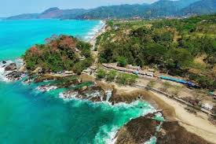
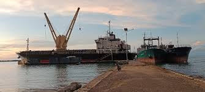

Beranda
Tentang
Layanan
Pengalaman
Kontak
Pengalaman
Beranda
Pengalaman

STUDI SURVEI INVESTIGASI DESIGN (SID) PELABUHAN TELUK PATIPI
Provinsi Papua Barat
21 Mei 2024

STUDI DETAIL ENGINEERING DESIGN (DED) PELABUHAN LEKSULA
Provinsi Maluku
20 Mei 2024
STUDI STANDAR BIAYA PEMELIHARAAN SBNP
Provinsi Jakarta
8 Oktober 2024
STUDI PENYUSUNAN INDEKS BIAYA SURVEI MANDIRI PADA DISTRIK NAVIGASI
Provinsi Jakarta
15 November 2024
PENYUSUNAN STUDI DETAIL ENGINEERING DESIGN (DED) FASILITAS BREAKWATER PELABUHAN LAUT TANAH AMPO
Provinsi Bali
19 Juni 2024
PENYUSUNAN STUDI DETAIL ENGINEERING DESIGN (DED) FASILITAS PELABUHAN LAUT NUSA PENIDA
Provinsi Bali
6 Juni 2024
STUDI PENYUSUNAN RENCANA INDUK, DAERAH LINGKUNGAN KERJA, DAN DAERAH LINGKUNGAN KEPENTINGAN PELABUHAN BULI, PELABUHAN SUBAIM DAN PELABUHAN BICOLI
Provinsi Maluku Utara
22 Mei 2024
STUDI PENYUSUNAN RENCANA INDUK, DAERAH LINGKUNGAN KERJA, DANDAERAH LINGKUNGAN KEPENTINGAN PELABUHAN BONTANG DAN PELABUHAN TANJUNG LAUT
Provinsi Kalimantan Timur
24 Mei 2024
DETAIL ENGINEERING DESIGN (DED) TANJUNG PARIT LIGHTHOUSE ILL.NR 632
Provinsi Riau
29 April 2024
STUDI SURVEY INVESTIGASI DAN DESAIN (SID) PENGERUKAN ALUR PELAYARAN DAN KOLAM PELABUHAN JAILOLO
Provinsi Maluku Utara
2 April 2024
STUDI SURVEY INVESTIGASI DAN DESAIN (SID) PENGERUKAN ALUR PELAYARAN DAN KOLAM PELABUHAN PENDUKUNG IBU KOTA NUSANTARA (IKN) PEMALUAN
Provinsi Kalimantan Timur
25 Januari 2024
STUDI SURVEY INVESTIGASI DAN DESAIN (SID) PENGERUKAN ALUR PELAYARAN DAN KOLAM PELABUHAN SANUR
Provinsi Bali
25 Januari 2024
SURVEI BATIMETRI PERAIRAN KARANGKANDRI KABUPATEN CILACAP
Provinsi Jawa Tengah
18 Maret 2024
REVIEW STUDI SURVEI INVESTIGASI DAN DESIGN (SID) FASILITAS PELABUHAN LAUT LEBITI
Provinsi Sulawesi Tengah
1 Agustus 2024
STUDI DED INFRASTRUKTUR (JARINGAN LPJU, JARINGAN OPTIK KOMUNIKASI, JARINGAN AIR BESIH, DAN JARINGAN LIMBAH) WILAYAH BACKUP AREA PELABUHAN PATIMBAN
Subang
21 November 2024
Perusahaan Berdiri Pada Tahun 2020
TAHUN
2020
2021
2022
2023
2024
BERMINAT?
Silahkan Hubungi Via WhatsApp
Hubungi